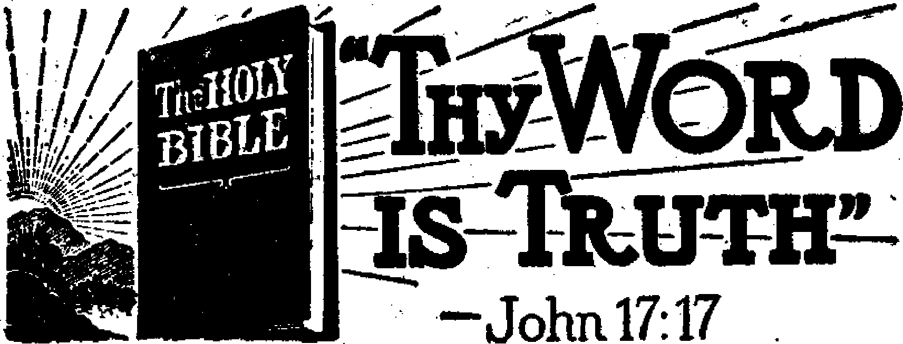
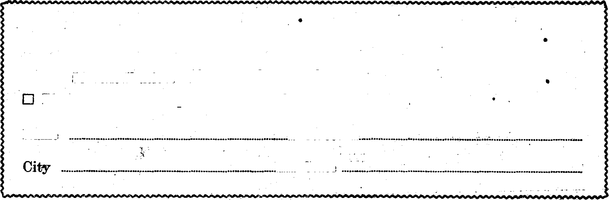

Jehovah’s witnesses Hold Series of Conventions 3
An Unexpected Meeting at Tucson, Ariz,
Less than Two Hours at Salt Lake City 10
The Largest Convention, at Chicago
The Most Deadly Totalitarian Government
“Thy Word Is Truth”
Religious Education Falling Off
Oldest and Largest Living Things
Presenting “This Gospel of the Kingdom”
Bible Dictionaries as Study Aids
They Shouldn’t Have Told It to a Marine 31
Published every other Wednesday by WATCHTOWER BIBLE AND TRACT SOCIETY, INC.
117 Adams St., Brooklyn 1, N. Y., U. S. A OFFICERS President N. H. Knorr
Secretary W. E. Van Amburgh
Editor Clayton J. Woodworth
Five Cents a Copy $1 a year in the United States $1.25 to Canada and all other countries
NOTICE TO SUBSCRIBERS
Remittances: For your own safety, remit by postal or express money order. When coin or currency is lost in the ordinary mails, there is no redress. Remittances from countries other than those named below may be made to the Brooklyn office, but only by International postal money order.
Receipt of a new or renewal subscription will be acknowledged only when requested. Notice of Expiration is sent with the journal one month before subscription expires. Please renew promptly to avoid loss of copies. 'Send change of address direct to us rather than to the post office. Your request should reach us at least two weeks before the date of Issue with which it is to take effect. Send your old as well as the new address. Copies will not be forwarded by the post office to your new address unless extra postage is provided by you.
Published also in Greek, Portuguese, Spanish, and Ukrainian.
OFFICES FOR OTHER COUNTRIES
England 34 Craven Terrace, London, W. 2
Australia 7 Beresford Ro^d, Strathfield, N. S. W. South Africa 623 Boston House, Cape Town
Mexico Calzada de Melchor Ocampo 71, Mexico, D. F. Brazil Caixa Postal 1319, Rio de Janeiro
Argentina Calle Honduras 5646-48, Buenos Aires Entered as second-class matter at Brooklyn, N. Y., under the Act of March 3, 1879,
“A New World Idea”
♦ Many people seem convinced that after this war is over there will be “a hew world”, blit they do not think of it in terms in which that world is spoken of in the Scriptures, as the one for which Jesus taught His followers to pray and. for which He gave His all in heaven and earth. Jesus wished to see His Father’s name vindicated and a reign of absolute peace, justice and truth for all the millions how living that will never die.
On his return from his trip around the world Wendell Willkie made the statement over the radio, "We must fight our way through not alone to the destruction of our enemies but to a new world idea.” Commenting on his radio address the columnist Anne O’Hare McCormick remarked on the “ancient nations’ being reborn in the profound convulsions of war and change”. But in the New World there will not be any ancient nations, nor any new ones. There will be just God’s people; and those who are not His will not be anywhere.—Obadiah 16.
Organized Crime
♦ Organized crime is a big business today, with an annual bill of ten billion dollars. “Big time” racketeering has learned the lesson that it is unsafe to steal less than $100,000 in the United States. Organized crime nestles comfortably in that murky breeding-ground of shady business and party politics. Even the federal Department of Justice does not choose to meddle with it in any decisive fashion.—Dr. Barnes.
The City Behind Bars /
♦ America’s city behind bars is in the immediate neighborhood of a quarter of a million population. There are 161,386 in the 108 largest prisons as of December 31, 1939, but there are 3,000 county jails and 10,000 police lockups through which 1,000,000 persons pass every year.
“And in His name shall the nations hope.”—Matthew 12:21, A.R.V.
Volume XXV
Brooklyn, N. Y., Wednesday, June 7, 1944
Number 645
Jehovah’s witnesses Hold Series of Conventions
(Society’s president attends in Costa Rica, Mexico, and many American cities)
HRISTIAN fellowship is edifying to all. Christians today are more widely scattered throughout the earth than in the days of the apostles, and association together is vital in these perilous last days. So, like Jehovah’s witnesses of early Christian times, neither do they 'forsake the assembling of themselves together’. Also, they look forward to special visits by representatives from the Lord’s visible organization to counsel and aid them in more effectively ministering in Jehovah’s service. Recently a tour involving many such visits was completed by the president of the Watch Tower Bible and Tract Society, Mr. N. H. Knorr. '
Readers of Consolation have already enjoyed the account of the Havana, Cuba, convention as published in our issue No. 640. Miami, Florida, and Havana, Cuba, however, were just the beginning of the visits by the president with Jehovah’s witnesses in the Americas. His itinerary included (in addition to Cuba) Mexico, Guatemala., and Costa Rica, as well as some principal cities of the United States. Consolation is pleased to have the opportunity of reporting this interesting trip, r
New Orleans, La
First to be visited after the Havana convention was the city of New Orleans. Here a convention'was scheduled for February 19 and 20, with a speech by Mr. Knorr on “The Coming World Regeneration”. Due to conditions peculiar to the South, it was not possible for all the conventioners to attend at one auditorium; therefore Carpenters Auditorium was engaged for the white delegates and San Jacinto Club for the colored, both halls being centrally located. Arrangements were made to have the halls connected by telephone lines so •the entire program could be heard at either auditorium. During the convention, however, the president personally spoke at both places to the great satisfaction of everyone.
It was not the first convention for New Orleans, but the very fact that the Society’s president was there in person aroused great enthusiasm. It may be remembered that in 1938, when a former president of the Society spoke from London, England, by radio, to conventions around the world, certain Catholic religionists disrupted the New Orleans assembly and later boasted that they had “frustrated” the convention of Jehovah’s witnesses. Then it was that one
I . '
McNamara, in the employ of the police department, along with other “officers of the law”, took it into his hands to illegally cut the wires which were bringing the speech. J ■ ■ '
Almostsix years have passed by since that stigma was placed upon the history of New Orleans. The local Catholic hierarchy have continued ceaselessly to exiert their influence in New Orleans, but apparently are losing their hold. This we see in the holding of such a fine convention there, which, it was reported, the same McNamara of 1938 fame attended during one session and kept his place in silence.
It was evident from the start that the hierarchy hadn’t been very successful with their “scare campaign” against Jehovah’s witnesses. Great advertising work was done in the main business sections of New Orleans, with 100,000 handbills being distributed and upward of 500 large paper signs placed in the store windows. A brief notice appeared in the press. The city knew about the assembly of Jehovah’s witnesses and “The Coming World Regeneration”.
The program arranged for Saturday, the 19th, included speeches by a graduate of the second class of the Watchtower Bible College of Gilead, the president’s secretary, two of the Society’s representatives from Louisiana, and was climaxed by the president’s discourse, “The Glorious Treasure of Service,.” (See the Watchtower magazine, May 1, 1944, for text of this speech.)
Sunday, the 20th, the day of the anticipated public address, “The Coming World Regeneration,” by N. IT. Knorr, brought an overcast sky and showers. The public address was the event of the day, although there were an immersion of 11 persons and several other features, including the evening study of the Watchtower magazine. About two hours before the speech the heavens seemed to open and pour down water ‘by the bucketfuls’, which continued throughout the afternoon. Nevertheless, 1,204 attended, rejoiced in the word-picture of the blessed New World, and broke their attentive silence only for appreciative applause.
. In the audience were several recently-graduated pioneers from Gilead College. With everyone there so interested in Gilead, a few remarks from each about his experiences during his stay at the College were appropriate and delightful. Then, as a special surprise, the president appeared Sunday evening to make a few extemporaneous remarks concerning the progress of the work in Cuba, where he had just been, and the good increase of the work earth-wide. 4-
San Antonio, Texas
The trip itinerary necessitated an overnight stopover in San Antonio, Texas, before entraining for Mexico city. Mr. Knorr therefore offered to speak to the San Antonio company of Jehovah’s witnesses on the evening of February 21, if they wished. Did they? By all means! The beautiful San Pedro Playhouse, seating 656, was engaged and a few neighboring companies of Jehovah’s witnesses notified. What a surprise when over 1200 persons packed out and overflowed the Playhouse! The ‘grapevine’ had been working! People came from Houston, Dallas, Fort Worth, San Angelo, the Rio Grande valley, yes, from all parts of Texas, and some from Oklahoma and Louisiana. All were eager to see and hear the speaker. At 7 : 30 p.m. he spoke on- “The Glorious Treasure of Service”, to be followed by his secretary with a report of the Miami and New Orleans assemblies. Then, ‘Would you like me to tell you more?” inquired the president. “Yes! Please!” came the unanimous reply. The president concluded his remarks as the clock struck ten. Seemingly they could have listened for hours. 1 4
It would be quite unusual to reach Mexico city according to train schedules. The arrival of the president of the Society was certainly no exception; the train was six hours late. That night, February 24, there was a service meeting of the Mexico city company in their new Kingdom Hall. It appeared that the company had doubled in size since the president’s visit a year ago. For about fifteen minutes he spoke to them through an interpreter, the Society’s Mexican representative, and concluded with the announcement that he was merely pass-
ing through at that time but would return within two weeks for a local convention, on March 12. The expressive Mexican publishers manifested their joy by unrestrained shouts and applause.
The flight from Mexico city to San Jose by Pan-American Airways is indeed interesting. Over Mexico the plane is at about ten to twelve thousand feet altitude most of the time, and here and there a snow-covered mountain is seen < ___
projecting above some clouds. The first stop, at Tapachula, in the Mexican state of Chiapas, is like dropping into another world. Mexico city is built on a high plateau. There is little rainfall - during the winter season; the climate is mild and exhilarating. Tapachula is low on the coast, a tropical. city. Banana trees are seen everywhere around the airport. The climate is extremely hot and humid. There is a breeze at Tapachula, but after Mexico city it felt like standing before a furnace. The stay at Tapachula is for about fifteen minutes.
An hour later, as the airliner lands at the large, modern Guatemala city airport, the sun is just dipping below the horizon. Pan-American Airways does not operate its passenger ships at night over Central America, so it’s Guatemala city for the night. A pleasant surprise is in store for the traveler here. The city is striking in appearance, very clean, and nestled in surroundings of green hills and volcanoes. Beautiful flowers fill the air with their fragrance. The altitude of about 5,000 feet makes the climate delightful. The hotels are good and the food plentiful. One begins to feel sorry he can’t stay for a while; but a sunrise ' departure leaves time only for sleep.
I, ■h
I In Costa Rica
After brief stops at airports near San Salvador (El Salvador), Tegucigalpa ’■ (Honduras) and Managua (Nicaragua), f the huge plane glides into San Jose, the
capital city of Costa Rica. It lies in a broad,, fertile valley 3,800 feet above sea level and not far from the picturesque volcano Irazu. Mr. T. H. Siebenlist and his wife, both graduates of the first class at Gilead, and some of the Costa Rican witnesses met the president and his secretary. It was the first time a president of the Watchtower Bible and Tract Society had made a personal visit to that land. To the Costa Ricans, March 1 marked a great event in their lives. For many years the Bible truth has been proclaimed in Costa Rica,’and the publishers are very faithful in their work. Occasionally they had seen a representative from the Society’s headquarters. Some had waited so long for the day when the president would visit them that now it seemed almost like a dream; but it was real.
An assembly was scheduled for San Jose on March 5, but at the time of the arrival of the president no auditorium had been obtained. The National Opera House is generally available for gatherings of all types; however, when those in charge were approached as to its use by the Society’s president for his address to the Costa Ricans it was pointed out that Costa Rica is a Catholic country, and no one but the Catholics could use it for anything “religious”. Thus they denied their own people the use of a public. building. Another meeting-place, adequate and centrally located, was obtained.
There are two main rail lines in Costa Rica, one running between San Jose and Port Limon and the other between San Jose and Puntarenas, the latter being electrified. As early as Wednesday, March 1, the witnesses began to arrive in San Jose for the March 5 convention by their two rail lines, which are really their only means of travel from the coastal points. They swelled the numbers in attendance at the new Kingdom Hall of the San Jose company, the 2nd of March, at the service meeting. There are many colored witnesses from the British
West Indies who speak only English or who prefer English because they understand it better, although Spanish is the national language. Much English is spoken on the Atlantic side. It was fortunate that one of these Kingdom publishers has an excellent command of both English and Spanish; someone was needed to interpret for the president and his secretary, who were privileged- to say a few words at the service meeting. It was a foretaste of the assembly to come Sunday.
Costa Rica’s Biggest Assembly
March 5 came quickly for these busy witnesses. The sun shone with warm friendliness as the Costa Ricans gathered to the local Kingdom1 Hall for their field service assembly. The hall was as full as it could be; people were standing on alt sides. They were all equipped with literature, territories were assigned, instructions were given, and off they went to all corners of San Jose to make the truth known. It was by far the most witnessing ever'done in that city in one day. And they came back smiling, happy in the rich blessings they reaped through singing the Kingdom truths, outdoing the contrasting, tolling bells of the houses of religion. Over one hundred witnesses were in San Jose that Sunday morning, and more were coming in during the day. ‘
There were 165 at the convention hall when the afternoon session got under way. Many were still to come from the Atlantic zone. By the interpreter, the president’s secretary addressed them concerning the progress in the divine education of Jehovah’s witnesses during the years since 1918. He gave way to Mr. Siebenlist of Gilead, who spoke to the assembly in Spanish, using the latest issue of La Atalaya (The Watchtower) as the basis for his remarks.
Intermission to allow for the evening meal followed. Just as the witnesses were dispersing many of the Port Limon delegates and those from Siquirres and other eastern rail points began to arrive. Special cars had been added to the train at Port Limon and -Siquirres to accommodate these conventioners, but when the train reached the mountains about thirty miles east of San Jose there were too many cars for the locomotive to make the grade. The special cars had to be cut off and left behind while the rest of the train was taken over the top. Then the locomotive had to go back for the other cars. Better late than never, was the good-natured attitude of the tardy conventioners.
At the evening session the president told 330 attentive Costa Ricans about “The Glorious Treasure of Service”. It may not have been the largest assembly of Jehovah’s witnesses ever held on earth, but it would be hard to find a happier or more enthusiastic group of witnesses. They were extremely interested in the reports on the conventions at Miami, Havana, and New Orleans, the San Antonio meeting, and the work in Mexico and other lands. The Lord has been blessing the work in Costa Rica too, and it brought the speaker much joy to be able to announce that the book supply depot at Siquirres would be replaced by a branch office located at San Jose. A house in Barrio Mexico, the northern part of the city, had been rented two days before for the office and Bethel home. Later on a servant to the brethren, one of the Society’s representatives who visits and counsels the various companies of Jehovah’s witnesses, would be sent to help them. And that wasn’t all. He hoped it would be possible in the coming months to send at least five more graduates of Gilead College to help them carry on. Their prayers of thanksgiving went up to Jehovah for all these marvelous provisions and the prospects of increased work in Costa Rica. What more was there to say? The Society’s president bid his brethren good-bye, expressing his hope to be with them again and have a convention twice as large. .
CONSOLATION
The good accomplished through the San Jose convention is best demonstrated in the report of the branch servant at the end of March: “The assembly early in March gave us a good start in the number of publishers reporting for the entire month. The San Jose company alone showed an increase of fifteen publishers over > February, thus setting a new peak of forty publishers. Port Limon reached its peak of publishers the first time since September, 1943, with forty-three reporting.” And the Port Limon company sent the following letter:
Dear Brother Knorr:
Greetings in Jehovah’s name through His Theocratic King Christ Jesus. The Port Limon Co. of Jehovah’s witnesses deems it b
one of the greatest privileges to express its heartfelt joy and gratitude to you upon your visit to San Jose, Costa Rica. Sunday, March 5, 1944, was one of the grandest* days for the Lord’s people in Costa Rica. It was filled with enthusiasm, for it has been a rare Z Lr
pleasure to have the president of the Society in our field—a thing we really did not expect. We returned from the capital with renewed zeal and renewed determination to press forward in this aggressive warfare. Upon your timely advice and admonition we, the Limon unit, are glad to adhere to, and carry out every instruction as best we can. We do realize that we are at the dawn of the New World, and to begin to live for such is our greatest desire. Filled with the refreshing and invigorating truth that flows from the temple, we are determined to continue steadfast as bold fighters for the New World.
Our joy and thanks to Jehovah for the Society’s Branch Office in San Jose cannot , be overstated. It is years we have been praying that the Society see the necessity of send-. I
ing a representative to that vast uncovered field to aid the few witnesses there, and to sound His message of warning to the “people I of good-will”, and now that it is accomplished i. we will with great effort co-operate with Bro. * Siebenlist in every possible way for the [ progress and advancement of the work.
Accept our sincerest wishes for the Lord’s blessing upon you’ May His strong arm continue to protect and direct you. We hope and pray for a next visit from you soon, trusting that then you will grant us the pleasure of your presence, which we know will be a great help and bring us a blessing in our little Port.
Your fellow workers in the Free Nation, Limon Company of Jehovah’s witnesses
■fr f
Returning to Mexico
The flight back to Mexico city was over the same route, with the night stop-over at Guatemala city on March 6. Guatemala has not been entirely without the Kingdom message, there being a small company at Guatemala city and a faithful pioneer in the vicinity of Rio Bravo. The lone pioneer is an elderly colored woman who speaks English and Spanish. She received news of the stop-over on March 5 and, being about a hundred miles from Guatemala city by rail, made immediate preparations for the trip to the capital. She did not forget her friends of good-will in the excitement, and was able to bring a lady with her, the fruits of her Christian labors. She was the one at the Guatemala airport who approached the Society’s president with the query, “Are you el presi-dente ?•” A meeting was arranged at the home of a witness. Those of the company spoke no English, so most of the conversation was with the pioneer, although the president’s secretary was able to say a few words in Spanish to the Guatemalans, with the help of a dictionary. The small' meeting touched the Society’s president more than any other of the entire trip. The witnesses explained their position in a land of impressive scenery and oppressive rulers, and that they actually lived under a dictatorship influenced by the Roman Catholic Hierarchy. The outward appearance is beautiful to the transmigrant e, but within there exists an undercurrent of dissatisfaction and poverty.
They showed how greatly the people needed the comfort of the Kingdom message, and how few there were to serve them. El presidente thrilled them with the suggestion that some from Gilead would be sent to help them as early as it could be arranged.
The modern, colorful, fully-equipped auditorium of the electricians’ syndicate, conveniently situated along the avenue Artes, not far from the Paseo de la Reforma, was the site of the Mexico 7 >
city assembly. It was available for the afternoon only. Shortly after one o’clock the Mexican delegates began to assemble. By 2:15 p.m., five hundred of them, mostly from Mexico city and near-by companies, were seated in the auditorium. A few delegates came from the states of Vera Cruz, Chihuahua, Tamaulipas, Nuevo Leon, San Luis Potosi, Jalisco, and others, but many were unable to come on such short notice.
The program brought the president’s secretary before the assembled witnesses as the first speaker. Then the Mexican servant delivered a very forceful talk, “The Firstborn Smitten,” the auditors being pleased to learn of the smiting of the now corpse-like firstborn in this old world. A representative from the Mexican office devoted fifteen minutes to a discussion of the privileges of full-time pioneer service. There is a big field in Mexico for pioneers. *
What everyone was awaiting, however, was the president’s lecture on “The Glorious Treasure of Service”. The Mexican office servant interpreted. Conven-tioners leaned forward in their seats, as though afraid they would miss a word. They wanted to hear and understand everything; and days later they were heard talking about letting the glorylight shine from their faces.
Then, in a very informal manner, the Society’s president related the events of the trip, conveying the greetings of those all along the way. He told how much was being done to advance the work in Mexico and how the number of active publishers of The Theocracy in Mexico had increased during the past year from some 1,400 to 2,541. Efforts were being put forth to further stimulate the Mexican field by sending graduates of Gilead to help them. That was wonderful to hear; but the biggest thrill of all was the announcement that two of the full-time publishers from the Mexican office had been invited to attend the next class at Gilead. Perhaps this was only the beginning; many more might go to the college for future classes. What an incentive to push ahead with the work!
Upon recommendation of the passenger agent of a Mexican railroad, an extra day was allowed for train connections at Tucson. That wasn’t according to the original itinerary, but it proved a wise move. Somewhere along the way, between Mexico city and Nogales, Sonora, the engineers managed to lose fifteen hours and twenty minutes. If he reached Tucson by Sunday afternoon, March 19, the president would speak to the Tucson company. Phoenix and other companies heard about it. Though not sure there would be a meeting with the Society’s president, they came to Tucson just the same. Mr. Knorr arrived in the morning and everyone was notified there would be a meeting. “The Glorious Treasure of Service” is what they wanted to hear. They heard it, 175 grateful witnesses, in the local Kingdom Hall. These Arizonans were glad there are slow Mexican trains.
A convention was scheduled for March 25 and 26 at the Vasa Clubhouse, 3094 El Cajon Boulevard. It was the largest auditorium available, and only during the public address was it necessary for anyone to use the chairs placed on the outside. The program arranged was similar to that at New Orleans. The largest number of people ever to attend a convention of Jehovah’s witnesses in San Diego, 1,007, appeared for the president’s speech, “The Coming World seemed to be an indication that the time was ripe for the most intensive advertising campaign ever staged in San Francisco. If there was a soul who didn’t learn about “Religion Reaps the Whirlwind”
San Diego convention
Regeneration,” proof that an effective witness had been made in San Diego.
Having outgrown all of the auditoriums in San Francisco except the Civic, which was always denied to Jehovah’s witnesses in times past, it had seemed quite impossible to the local convention committee that an adequate auditorium could be had. The only thing to do was to try the Civic Auditorium again. Once more the manager refused; however, this time he stated his objections. Someone had misinformed him concerning the type of conventions Jehovah’s witnesses hold. With the aid of the manager of another auditorium in San Francisco who had seen how Jehovah’s witnesses conduct their conventions, the Civic Auditorium manager was shown the truth and he readily leased his hall. This at the Civic Auditorium on April 2, it was only because he closed his eyes when he went into the streets of the city. Strangely contrasting posters appeared side by side on the Auditorium billboards : one advertising the heathen Easter services to be conducted under the auspices of the archbishop of San Francisco on April 7, and the other faithfully reiterating “Religion Reaps the Whirlwind”.
The convention program for the two days was patterned after San Diego and New Orleans, but the public address “Religion Reaps the Whirlwind” had not yet been given. That was the big feature and everyone looked forward to it. The 'Saturday attendance was 3,000.
Sunday, the 2nd, opened with the baptism of 54 new witnesses for The Theocracy. Off they went after the immersion to join the 1,400 other busy witnesses in the field, inviting the people to come to the Civic Auditorium. The advertising and personal-invitation work was very fruitful, for by 3 p.m. and the introduction of Mr. Knorr for his piiblic address 5,000 people were seated in the Auditorium. Many were wondering, “Just what does he mean, ^Religion Reaps the Whirlwind’?” They soon found the answer. Mr. Knorr removed the mask behind which religion hides, religious lies (Isaiah 28:15), and by their own testimony he showed them in their true, light, nothing butpagans. They have not sown according to God’s Word of truth, but as Hosea 8:7 states: “They have sown the wind, and they shall reap the whirlwind,” destruction at the hands of the righteous Almighty
Billboard at Denver
God. It was not a malicious attack upon religious leaders. That would accomplish no lasting good. Rather, it was an expose of religion as empty, without sound basis. It was an appeal to the people of goodwill to turn to the Holy Scriptures and follow the Christianity therein taught as the only way to life in the regenerated New World of righteousness. One individual sought to disturb the meeting by shouting vile words at the speaker, and he was persuaded by the ushers to leave the auditorium, amid the sihiles of those seated near by. The truth hurts sometimes, and some can’t stand its power. With the exception of this one, however, the audience was very attentive and enjoyed to the full the points made in the course of the speech, constantly interrupting with'applause. .
As a token of the effectiveness of the truths brought out, one of the ushers picked up a crucifix (which is actually a religious image and has nothing to do with Christianity) that a woman had torn from about her neck and thrown to the floor.
At the conclusion of the address announcement was made that everyone could receive a free copy of The Coming World Regeneration from the ushers. Observed as an usher handing out booklets was a young man in the uniform of the U. S. Navy, who had recently become a Kingdom publisher and who had been out in the work that day. As he stood handing out booklets he was approached by a U.S. soldier, who said: “Say! there’s a lot of people going out that other door who aren’t getting a copy of the booklet; give me some to hand out”; whereupon he was handed a supply and took his position at the exit, passing out booklets until they were all gone.
Several days later streetcars still carried signs showing “Religion Reaps the Whirlwind”. Those signs may be replaced by others now, but there are several thousand people in San Francisco who cannot forget “Religion Reaps the Whirlwind”.
Once again taking advantage of a brief period between trains, an hour and thirty-five minutes 4o be exact, the Society’s president was privileged to address 129 of the Utah witnesses who had gathered at the Kingdom Hall of the Salt Lake City company of Jehovah’s witnesses. He dealt with “The Glorious Treasure of Service”, following it up by a report of his trip and the work being done world-wide. There was no time to speak to anyone individually; it was just *
!■
President Knorr and a part of the assembly at San Francisco
JUNE 1,1944
11
deliver his lecture and go. The Utahans smiled their appreciation and waved good-bye.
For the first time in twenty-six years Denver was favored with a visit of the chief representative of the Watch Tower Bible and Tract Society, The Denver witnesses meant to make the most of it, too. A hundred thousand handbills were distributed, signs were placed in store windows all over the city, hundreds of wit-nesses carried signs throughout the city, and over fifty cars were sprayed with signs to advertise “Reli-gion Reaps the Whirlwind” at the Municipal Auditorium on April 9.
Billboards at busy intersections heralded forth the announcement.
April 8 being the Memorial date, that event was looked forward to by all. In the afternoon, after two other discourses, the speech “The Glorious Treasure of Service” was delivered by Mr. Knorr. He also conducted the Memorial celebration and discussed its significance. There were 1,103 in attendance; 148 partook of the bread and wine. During the serving of the emblems the public-address system gave out. That did not disrupt the meeting, however, for he just put more power behind his voice and everyone heard.
Sunday morning twenty persons sym-bolizecLconsecration by water immersion, thereafter joining hundreds of other witnesses who were visiting the people of Denver at their homes. Rain fell throughout the day and, while the weather may have discouraged some who thought about coming to hear “Religion Reaps the Whirlwind”, the people of good-will began pouring into the auditorium an hour before time and soon had the entire downstairs portion and the boxes filled.
Then they went into the balcony. The ushers counted 1,734 listeners. One lady, who intended to go to the Sunrise Services held by the Knights Templar in the same auditorium but had arrived too late, decided to stay
for the assembly, showing much interest and giving a subscription for the Watchtower magazine. She was not alone in her appreciation. Two subscription booths were kept busy after the lecture taking new subscriptions and placing other literature.
A study in The Watchtower brought to a conclusion an assembly which Denver needed for a long time, one which is still being talked about in Colorado.
On April 15 and 16, Chicago's Coliseum, S. Wabash and 15th, housed the largest convention of the tour; The convention program was added to by the presence of jthe vice-president of the Society, H. C. Covington, who came to Chicago to act as the chairman of the convention. From the first and second graduating classes of Gilead College six men and four women were in attendance. Each was given the opportunity to speak during the two days. They urged upon their fellow witnesses the need of becoming pioneers so as to qualify for entry at the college. They expect to need some help when they go abroad to visit isles of the sea and lands where The Theocracy is unknown.
As at San Francisco and Denver, the outstanding event was to be the speech on ‘‘Religion Reaps the Whirlwind”, at 3 p.m. on Sunday. Everyone was busy making it known to the good citizens of Chicago. Five automobiles were equipped with banners as long as the cars themselves and driven throughout the Loop area almost continually during the week prior to the convention. Hundreds of thousands of invitations were distributed. This diligent activity brought good results. There were 5,000 in attendance during the Saturday and Sunday sessions, but at the time of the public address 8,500 persons packed the Coliseum to hear
speaker was at his best. His announcement at the conclusion that free printed copies were on hand brought forth a thunderous
shook the building. That was the initial release of the book-
Chicago Assembly
let Religion Reaps the Whirlwind, fittingly in the very religious city of Chicago.
Those who attended came principally from Illinois, Wisconsin, Minnesota, Michigan, Ohio, Indiana, and Iowa, with a few from places as far away as Texas and Florida. Of the delegates, 113 were immersed on Sunday morning.
To Brooklyn via Gilead College
When the third class assembled at Gilead, on March 6, the Society’s president was at San Jose, Costa Rica. Not having seen them personally, he arranged to stop at South Lansing, N. Y., for a few days. En route there is a change in trains at Buffalo, N. Y., allowing sufficient time to address the combined units of the Buffalo company of Jehovah’s witnesses on “The Glorious
Treasure of Service”. Over three hundred were present.
At Gilead things were progressing nicely. The third class was deep in the midst of studies. Each day the president • addressed the student body during the morning lecture period. They were especially interested in the former students now in foreign lands and the manner of carrying on the work there, about which he was glad to tell them.
As a fitting termination of his busy trip, Mr. Knorr made arrangements to broadcast “Reli-
Whirlwind” over the Society’s sta-
tion, WBBR
Brooklyn, N.Y., on
April 23. The
widely heard. At the conclusion announcement was made that free copies were available to listeners
Daily, during the week following, hundreds of letters and post cards were received at WBBR offices from Pennsylvania, New Jersey, New York, and Connecticut.
Prosperity has come to the Lord’s witness work in these perilous times. These assemblies are past, but the effect remains. Many have gained precious knowledge and are strengthened to proceed with their God-given work of carrying nourishing spiritual food to persons who love righteousness, for their comfort. Jehovah’s witnesses have a glorious treasure in the ministry, and they, intend to use it well. Soon religion will reap the whirlwind of destruction at God’s judging hand, and then true worshipers of the Most High will dwell peacefully in the regenerated New World of righteousness.
f
HE New York Times sent a capable staff writer over the new Canada-Alaska highway, and below are some of the things that he brought to light. , In the first place, nobody was coaxed to participate in this work. On the wall of the hiring hall in Edmonton, Alberta, was the sign,, printed in bold letters:
This is no picnic. Working and living conditions on this job are as difficult as those encountered on any construction job ever done in the United States or foreign territory. Men hired for this job will be required to work and live under the most extreme conditions imaginable. Temperatures will rgnge from 90 degrees above zero to 70 degrees below zero. Men -will have to fight swamps, rivers, ice and cold. Mosquitoes, flies and gnats will not only be annoying but will cause bodily harm. If you are not prepared to live under these and similar conditions, do not apply. .
That was telling ’em, and it was telling ’em the truth. In the long days of summer, the men had to wear veils for their heads and gloves for their hands to ward off the mosquitoes, black flies, and other bloodthirsty insects for which some parts of the far north are famous.
In some places the yellow dust of the glacial deposits was so thick that the trucks had their lamps switched on all , day, and the workers had to wear dust respirators in order to breathe.
The getting of supplies across some lakes and rivers was often accomplished by carrying portable sawmills, setting them up, sawing the timber, and so build-, ing barges to carry the things that had ' to be moved forward, including the portable sawmill itself. How’s that for enterprise?
Hurry-up supplies had to come by airplane, and in one ten-day period 100,000 pounds of machine parts went northward in that way.
The rivers present a problem all by themselves. On- this subject the aforesaid writer, Theodore Strauss, said:
*
At one arm of the White river, a few miles . r east of the Alaska border, a unit guards the temporary bridge night and day, and, until the freeze is solid, must sometimes blast the ice away from the bridge as often as eight times in a single night.
- Army colonels flying reconnaissance above the glacial headwaters of the White, the Don-jek and the Duke shake their heads anxiously as they see the ice jams piled up on the heights.
For the glacier-fed rivers in this area are shallow and swift flowing over their gravel beds and, as one discovers while riding the cab of an army truck from Kluane lake to the Alaska border, they freeze from the bottom up, accentuating natural reservoirs and irregularities in the river bottom. Above this the air freezes the false crust of the “hollow ice” and, in between, the river rushes this way, then that.
The Duke and the White are bridgebuilders' nightmares because the channel which today cuts through the seemingly frozen river near by may tomorrow be coursing through other grooves a mile away.
The men have all the comforts of construction workers, and, as you might wish to know what some of these are, another quotation is offered at this point:
Today, frozen sides of medt dangle from the spruce trees protected by wire mesh against wolves and dogs. Potatoes are iron-hard and have to be thawed for many hours before they can be cooked. Pancake batter may be freezing on top and burning where it touches the stove. Returned laundry arrives in a solid chunk, which has to be set beside the oil drum stove for days before a sock or a handkerchief can be pried loose.'
The Bill for Liquor
♦ When you get to worrying about the immense sums expended for relief in the United States, you might take a moment to consider that since liquor was put back on the country's bill of fare the amount spent for it exceeds by $1,000,-000,000 the total sum used in relief.
Deadly Totalitarian Government
A
ROPAGANDA and suppression have so hoodwinked public opinion as to shield the oldest and most absolute and
perhaps the most deadly of all totalitarian governments. Centuries ago it measurably accomplished what Hitler now strives to do. It imposed its authority on many peoples of the world.
Nations in which its influence is most complete now grovel in illiteracy nearly universal and their governments are frequently swept from power by revolution fomented by its enthroned agents. Its ruler surpasses all other totalitarians in the extravagances of his pretensions.
Other totalitarians have their “fifth columns” in many lands, but that particular dictator has his agents on about two thousand thrones in every part of the world. Everywhere- do they openly enforce the law of their totalitarian master in derogation of the national and local law. i1.
Other dictators keep their “fifth columns” under cover, but his function openly in defiance of the public authorities. He has muzzled the press, the radio and the picture shows. Scarcely would any book or newspaper dare carry either information or comment distasteful or discreditable to this vast supreme totalitarian government.
It is the one international government.
IT IS THE PAPACY.
The jurisdiction of all other rulers stops at the national borders. But that of the Roman pontiff does not stop. It encircles the earth. It boldly claims sole right to educate the people. Under that claim it lays its withering hands on the public schools; it thrusts its hands into the pockets of taxpayers/
In its structure and functions totalitarianism has reached perfection. Every “cardinal” is created by the triplecrowned pontiff. His power of creation is absolute. Every vestige of democracy is banished from his rule. No voice of the people is heard in his election. He
I.
creates the seventy “cardinals” in secret consistory and they elect the pope in secret conclave.
Every province, diocese and parish exists by his authority. Every primate, patriarch, “archbishop,” “bishop,” abbot, “priest,” monk, nun and layman is such by his will alone. For centuries he exercised appellate jurisdiction over the most powerful nations of the earth. Appeals lay directly from their highest courts to his tribunals in the Vatican. The growth of nationalism since the Reformation has upset that arrangement in some measure, but the pontiff still claims the right to such jurisdiction.
His law is essentially totalitarian in form and spirit. It is enacted and enforced by his fiat. It outlaws public schools to all Roman Catholics and requires them to patronize his alien schools. His legislation strips parents of all authority over the education of their • children and vests it exclusively in his enthroned hierarchy. The pontiffs officially condemn the sovereignty of the people as inherently wrong and fraught with danger.
In the present stupendous struggle of totalitarianism against democracy, the papacy is secretly aligned with the dictators. It is the supreme dictatorship and could stand nowhere else.—Gilbert 0. Nations, in the Ulster Protestant.
Exposing St. Francis Xavier’s Body
♦ For the week of May 7-13, 1942, the body of St. Francis Xavier, enclosed in glass, was exposed for public veneration in the church of Bom Jesus, Goa, India. This public worship of dead bodies is in direct violation of every word on the subject in the Holy Scriptures. It is the worshiping of an image, and a dead one at that. And, besides, there is a good chance that the image which the people see is merely a fake, made of wax or* stuffed with cotton, as was a common practice in Russia years ago.
THE longest period in man’s history in which there was no rain throughout all the earth was 1,656 years. That condition which continued down into Noah’s days began shortly before man’s creation, as stated at Genesis 2:5,6: “For the Lord God had not caused it to rain upon the earth, and there was not a man to till the ground. But there went up a mist from the earth, and watered the whole face of the ground.” The account next describes Adam’s creation.
In Noah’s day the influence of Satan the Devil was so strong that all the people came under his control, except Noah and the members of his household. Concerning Noah it is written that he was perfect in his generation. This was not perfection of physical organism, but the perfection resulting from complete devotion to his God, Jehovah. “But Noah found grace in the eyes of the Lord. These are the generations of Noah: Noah was a just man and perfect in his generations, and Noah walked with God.”—Genesis 6: 8,9.
God told Noah of His purpose, thus: “And God said unto Noah, The end of all flesh is come before me; for the earth is filled with violence through them; and, behold, I will destroy them with the earth.”—Genesis 6:13.
By that we are not to understand that God would destroy this mundane sphere, the planet earth, but that He would destroy the visible part of the world, the organization of the adversary. “And, •behold, I, even I, do bring a flood of waters upon the earth, to destroy all flesh, wherein is the breath of life, from under heaven; and every thing that is in the earth shall die. But with thee will I establish my covenant; and thou shalt come into the ark; thou, and thy sons, and thy wife, and thy sons’ wives with thee.” (Genesis 6:17,18) Noah believed God, and was obedient to Him. Such faith was pleasing to the Lord. “By faith Noah, being warned of God of things not seen as yet, moved with fear, prepared an ark to the saving of his house; by the which he condemned the world, and became heir of the righteousness which is by faith.”—Hebrews 11:7.
The righteous course of Noah testified against the Devil’s organization, both visible and invisible, and marked it with God’s condemnation. Noah was a witness for God, and for this reason Satan the Devil had turned all others against Noah and against God. Of course, the Devil would do everything within his power to destroy Noah, but was unable to do so because Noah had the protection of Jehovah. The mixed breeding of “daughters of men” with angelic “sons of God” had resulted in a progeny of 'mighty men of renown’ that were wicked beyond description. Also there were demon “giants” on earth iu those days. (Genesis 6:1-4) In demonstration of His almighty power for the vindication of His name and also for .the good of humankind Jehovah God must take action against that wicked world. He must carry Noah and his family through the world destruction and then start the human race anew. And this He did.
Noah warned the people of the impending judgment of the Lord against the wickedness prevailing on earth. They gave no heed. It was not a difficult matter for Satan, to induce the people to believe that rain never would fall. No one gave serious heed to the warning of Noah, but, on the contrary, they scoffed at him and made all manner of sport of his prophesying before them. In obedience to God Noah and his sons built the ark, which was completed after a long period
of time; and during its construction Noah, continued to preach righteousness to the people.
At the appointed time Noah and his family, and the beasts of various kinds, went into the ark. Then the Lord opened the windows of the heavens, and a great deluge of water swept from one end of the earth to the other and destroyed every living creature upon the face of the earth. This, of course, included the progeny of the angels, and women; but the “sons of God” and the demons that had left their first estate to appear as giants, will be finally disposed of at the great judgment day.—Jude 6; 2 Peter 2:4, 5.
But why should God bring the deluge? Was it merely to destroy wicked creatures? Such was not the sole nor even the most important reason. The issue in , the minds of the people was then, and is now: Who is the supreme and almighty God? Satan, unhindered, had induced almost all men, and a host of angels, to believe that he was superior to Jehovah. He became arrogant in the extreme, boastful of his greatness and'power; and doubtless he exhibited it in a marked degree. God would now teach all His creatures that every good and perfect thing proceeds from Himself, and that to follow Satan the enemy results in disaster. God would teach all intelligent creatures that He is the great eternal One and that from Him alone proceed the blessings of life, liberty and eternal happiness.
The deluge came and was so terrible that its marks are still upon the earth. All peoples, regardless of whether they believe in Jehovah God or not, have been taught by tradition that at some time in the past there was a great i deluge upon the earth. But tradition has ? failed to teach them the real reason why J the flood was sent. The flood was typical i of a greater and more terrible trouble I coming upon this present wicked world, i in which trouble Jehovah God will r ■
i demonstrate to all His creatures that He b.
is the Almighty One, the Most High. Long ago the spirit of the Lord had moved upon the mind of Noah to teach him of the approaching flood; but it is-manifest from the apostle Paul’s words that the deluge foreshadowed something even greater to come in our day. —Hebrews 11: 7.
Many centuries after the flood Jesus Christ said: “As the days of No'e were, so shall also the coming of the Son of man be.” (Matthew 24: 37) All the people, aside from Noah’s family, mocked him because he preached of the coming disaster upon the then evil world. All, aside from Noah and his family; formed a portion of Satan the Devil’s own religious system and worshiped the Devil or some other creature or creation. In this twentieth century the religious systems make sport of the preaching by Jehovah’s witnesses concerning the impending fall of Satan’s organization and the establishment of a new world of righteousness under Jehovah’s kingdom by Christ Jesus. In Noah’s day only a few were witnesses for God. Now only those who love and serve the Lord Jehovah with pure hearts are proving themselves really on the side of the Lord. It is to the faithful class that Jehovah now says: “Ye are my witnesses, . . . that I am God.” —Isaiah 43:10,12.
As the issue in Noah’s day was, “Who is God ?” even so now the issue is, “Who is God ?” That evil world, of which Satan was the ruler, Jehovah destroyed with the flood as an expression of indignation against wickedness and against that wicked one. It was for the purpose of teaching all His intelligent creatures that in Jehovah resides all power, which operates in complete harmony with wisdom, justice and love, and that the oppressed creatures of humankind will find complete deliverance only by taking heed to the mighty provision which God has graciously made for the deliverance and eternal blessing of His obedient creatures.
HE name dates from a book published in the year 1510 in which a certain mythical island of this name was described as "on the right hand of the Indies, very near the terrestrial Paradise”. Ordonez de Montalvo did not miss it much in that description, and if he is privileged to return from his long .sleep, and to make his home in the Golden State, he will be like everybody else that lives there. He will say, as others have said, “California is the only place to live.” That isn’t exactly correct, but it is not away off.
At certain times, in the vicinity of Los Angeles (1,504,277 population, fifth-largest city in the United States), it is possible to take a sleigh ride and to look down upon beautiful orange groves not five miles distant, and yet, within an hour, one can be bathing in the Pacific waters off Santa Monica beach in the winter temperature of 60 degrees Fahrenheit. This cannot be done in any other place in the world. More about the climate, later.
With its 6,907,387 population (95.5 percent white), California, 158,693 square miles in area, has an extreme length of 800 miles, an extreme width of 270 miles, and a coast line of 1,097 miles. Thus, this second state in size in the Union is 10,000 square miles larger than the combined areas of New Hampshire, Vermont, Rhode Island, Connecticut, New York, New Jersey, Pennsylvania, Delaware, Maryland, and the District of Columbia. < Stating it in European terms, it is larger than England, Scotland, Wales, all of Ireland, Belgium, and Netherlands, with enough left over to make another complete set of British West Indies. Or, stated in Asiatic terms, it is 10,000 square miles larger than all of Japan.
This writer, like many readers of this magazine, was personally well acquainted with one of the army of wide-
awake, hustling young Americans that rushed across the continent when gold was discovered in California in 1848; he also knew the Los Angeles resident who was legislated into distinction because he was the first white lad to be born, in California after the state was admitted to the Union, September 9, 1850. He also, with many others, saw William F. Cody (Buffalo Bill), one of the Pony Express riders, who, with his comrades, carried the mail through from Independence, Mo., to San Francisco in ten days. And if you think it is any fun to ride a horse 1,950 miles in ten days, try it once. On one trip Cody made 384 miles without stopping except for meals and to change horses. On one occasion the trip through was made in 7 days 17 hours. Post was $5 per half ounce, and, worth it. In those days, men were men and women were women.
California is proud of her mountains; and you can’t blame her for that. The Sierras cut the sky right in two for 600 miles at a stretch. In that distance there are 120 peaks exceeding 8,000 feet, 41 exceeding 10,000 feet, and 11 exceeding 14,000 feet. Highest of all, and highest peak in the continental United States, is Mount Whitney, which Californians are careful to explain is 14,494.777 feet high (this,' perhaps, in the hope that some few may mistake that period for a com-' ma). From this towering highest summit can be seen the lowest spot in the United States, Death Valley. Mount Shasta, which one may see almost from sunrise to sunset while en route by rail from Sacramento to Portland, Oreg., is only 14,350 feet high, and so is 144.777 feet lower than Mount Whitney. (How much more respectful that makes it look than to say that the difference between these two mountains is less than 200 feet!) Mount Shasta used to be a volcano; now it has glaciers instead. In Mount Lassen,
altitude 10,577 feet, California has the only active volcano in the United States. In 1914 it shot a column of steam 10,000 feet in the air, but that was all it did. As a volcano it is what might be called a hazwuzzer.
The width of the Sierras averages about 30 miles at the snow line, falling on the eastern slope 10,000 feet in 10 miles, but on the western slope averages only about 100 feet to the mile. It is these mountains, cutting off the cold winds from the north and east, that give California its paradisaical climate, and make it one of the choicest garden spots of the world.
The principal rivers of California, the Sacramento, 370 miles long (navigable for 180 miles), and the San Joaquin, 350 miles long (navigable to Stockton, 88 miles), join 60 miles northeast of San Francisco and enter San Francisco bay, one of the finest and safest harbors in the entire world. Two other valleys should be mentioned, Death Valley, which extends 276 feet below the sea level, and Yosemite valley, which is 7 miles long, 1| miles wide, surrounded by cliffs 3,500 feet high, and is famous over all the earth as one of the greatest sights in creation. The Pioneer waterfall, 3,270 * J J
feet, is one of the highest in the world.
7
An Exquisite Climate
One grand thing about California climate is that one can obtain any kind of climate one desires, and can depend on it. Hurricanes and ^cyclones are absolutely unknown; sunstroke also is unknown. In an average year there are over 350 days with only a half inch of. rain in Los Angeles. That makes this city, within which is located Hollywood, the most desirable place on earth for the movie industry. It may be added in this connection that California has also every kind of scenery known to man, and within a relatively short distance from /the studios. In the high Sierras the ; winter precipitation takes the form of snow, with an annual fall of 30 to 50
JUNE 7, 1944
feet, thus supplying the natural reservoirs which feed the streams, upon irrigation from which agriculture largely depends.
The winds are extremely regular in their movements. There are brisk daily sea breezes, and seasonal trade winds. Along the coast an on-shore breeze blows every summer day; in the evening it is replaced by a night fog, and the cooler air draws down the mountain sides in opposition to its movement during the day. Altitude is what makes climate in California. It gets hot in the summertime in the desert portions, running up to 129° in the shade, which is about the greatest heat ever recorded anywhere, but it is so dry that it is bearable. Death Valley combines the greatest heat and aridity of any place on earth.
San Diego, 300,000 population, 10 miles from the Mexican border, is accounted one of the ten best ports in the world, and with a climate, with an annual mean temperature of 61°, that is believed to bp as fine as any on earth.
In the very readable 17-page story about California in the Americana Encyclopedia, under the head “Earthquakes”, occurs this:
California has never had an earthquake approaching in severity that of Charleston, S. C., in 1886. The “Earthquake” of San Francisco, April 1906, was a very minor shock (geologically), not above the 6th or 7th magnitude. It broke rusty water mains in the 30 feet of sand with which lower San Francisco is “filled”. It threw down a few decrepit frame buildings, on the same sand “fill”, but not a single respectable structure in the city. Fire caught in one of the wrecked tenements; and half San Francisco was consumed because there was no water to check the fire. In Charleston, practically every building was wrecked by the earthquake. 4
A Top-Notcher in Education
In California 1 out of every 115 of the total population is in college. In this respect California leads the nation. The University of California is a colossal
19
I-
educational institution, having 34,475 full-time resident students in the year 1940-1941. In educational expenditures per capita New York state comes first and California comes next. Some of the great educational institutions of the state besides the one named are the four-year colleges at Chico, Arcata, Fresno, San Diego, San Francisco, San Jose, and Santa Barbara, the polytechnic at San Luis Obispo, the Stanford university at Palo Alto, the University of Southern California at Los Angeles, and the Lick Observatory (which, though here named separately, is a part of the University of California).
No one may vote in California unless he can read the state constitution and write his own name. Lobbying is made a felony. San Diego city school board voted 4 to 1 against application of the religious gangsters to release students of the public schools one hour each week so that they could teach them “religion”, i. e., disobedience to the Word of Almighty God. •
The University of California Daily Calif ornian shows a good deal of courage in panning the “American” Legion as follows:
This purportedly 100-percent American, organization contains the seeds of Fascism. The group in control has laid down a policy which is rampantly nationalistic; intolerant of other nations and other people; intolerant Of minorities within the United States; lacking in regard for the rights of citizens and strongly emotional in its approach to social and political problems. Would-be critics are frightened off by the Legion’s loudly proclaimed patriotism.
It is useless to try to teach anybody anything if he declines to use his brains. That holds good for others besides the Legion. If the Jacobbergers had read bygone issues of this magazine they would have learned not to cook fowls in aluminum utensils, and certainly not to store them in such utensils after they were cooked..But as the proprietors of
the De Lux Box Lunch and Catering Company of Los Angeles they have been sued for about $1,000,000 by 284 war workers who ate their turkey dinner, and the chances are that the real trouble was with the cooking utensils, though these were not mentioned. For that matter, they never are, except in this magazine, which accidentally stumbled upon the great truth that the phenomenal increase in cancer coincides ( with the phenomenal increase in the use of aluminum utensils, and that those who have been at death’s door, many of them, get well when they quit using the stuff and cook in something else. Seems like an easy way to get well.
Quite a cute story comes through from California of two little boys, each nine, who noticed a railroad switch was open. They were afraid a train might get wrecked, so they told a railroad man what they had seen. He looked and found the boys were wrong in playing hookey but right about the switch; so they were awarded $50 in an assembly of the school, not for playing hookey, but for using their brains about the switch.
While other branches of education appear to be up in California, it seems that the religious branch is down. At any rate, Frederick H. Eaton, of San Francisco, puts it this way:
No glottee much dough no moah. At least not in San Francisco’s famous Chinatown, where the priestly Catholic religious business has hit a slump. Or so it seems from the latest antics of these dollar-dunning dominies.
'• For some reason Chinese Catholic congregations have not been much enthused to see
*
their hard-earned money shipped to enemy Japan via collection box and Vatican City* Nor has the Pope’s protest at “China’s .bombing of the Japanese” poured oil on troubled waters* Japan has bombed the Chinese incessantly for years without one blat of protest from “His Oiliness.” No wonder proverbial Chinese patience has turned to anger against
the Vatican. No wonder the melodious tinkle of Chinese money in priestly coffers has dropped to a comparative whisper!
If there is a way to get money the religious crowd will find it. In this ease, parochial schools would seem to be the best solution. It costs money for children to attend parochial schools. Every day it seems that parents must give their children money for this collection and that. The priestly purse, like the maw of death, has never yet been filled, and only God in his mercy can stop either one.
Chinese children attend the Catholic paro- ■ ehial school in Frisco’s Chinatown. Childish minds of any race can be allured with beads and fairy tales. However, those of wiser years require something more than priestly minds can give. So, now that Papal action speaks louder than sugared words the true regard held by the Pope for Chinese folk, the parents of these children want no more Catholic education for their offspring. Withdrawals from the parochial school go on apace.
Frantic priests, anxious to stem the receding golden tide, are trying to prevent the pupils’ leaving. Transfers to public schools are being denied, and in this some public officials are co-operating with Romanism by offering the excuse that public schools are overcrowded. Chinese parents unable to understand much English are being pushed around and protests
• shelved. Yet where there is a will there is a way, and determined families are still getting
■ their children out of parochialism and into public schools where they belong.
So Papa allee samee bloke in Chinatown. There’s nothing left but bingo gambling games, it seems. Ho-hum! Every man to his own trade.
It is natural to write about California in superlatives. In fisheries it stands at the head of all the states; Massachusetts comes next. In petroleum it comes second; Texas is first. In its expenditures 1 for highways, it comes fourth; only Pennsylvania, New York and Illinois spend more. In manufactures of all kinds it comes seventh; and all this is very ? recent, since the discovery of the huge oil deposits. Its Golden Gate bridge, with a span of 4,200 feet, is the longest span in the world; its San Francisco Bay bridge, 8| miles long, is the only bridge in the world that was built in such deep water that the piers had to be built from the top down. Sounds impossible, doesn’t it? But one section of a pier was built; then it was let down; then another section was welded to it; then it was let down again, and so on until the shell hit bottom. Then the shell was filled with concrete.
California is third in the value of its mineral products, being surpassed only by Texas and Pennsylvania. Some of the mineral riches besides a remarkably rich topsoil, and the petroleum deposits already mentioned, are natural gas, gold, cement, borates, copper, lead, mercury, salt, sodium salts, and silver.
But wait! You haven’t heard the beginning of it. Of the 2,482,110 tons of grapes produced in the United States in 1940, California produced 2,186,000 tons, which is 88 percent. The state doesn’t mind letting the rest of the country know that it stands first in diversity of crops,-first in wines, first in total fruits, first in canned fruits, first in dried fruits, first in barley, first in number of irrigated farms, first in average wages in manufacturing establishments, first in borax, first in asphalt, first in quicksilver, first in platinum, first in beet sugar, first in hops, first in oranges, first in lemons, first in olives, first in all semitropical fruits, first in honey, first in prunes, first in almonds, first in beans, first in grapes, first in pears, first in peaches, first in cherries, first in apricots, and first in electric power transmission. It also is first in production of asparagus, first in celery, first in cauliflower, first in lettuce, and first in spinach.
Stopping here for breath, the Californian straightens up and talks again about California strawberries, raspberries, loganberries, blackberries, dewberries, and currants. Then he switches off to watermelons, cantaloupes, raisins,
plums, peaches, apples, figs, pears, walnuts, wheat, cotton, alligator pears (avocados), guavas, loquats, Japanese persimmons, pomegranates, and dates.
He leans back and you think he has finished, but he hasn’t. The irrepressible Californian! Up he comes once more and says: “Do you realize that California produces more than one-half of all America’s canned peaches; more than two-thirds of all the canned pears; nearly one-half of all the canned * cherries; nearly four-fifths of all the canned plums; more than one-half of all the canned beans, and more than one-half of all the dried fruits?” The rest of the country looks down and remains silent. Then he adds, “The typical California farm is ten acres, irrigated by its own pumping plant or by community irrigation, and it yields an income of $200 to $900 an acre.”
California is the leading state in irrigation; As long as .fifteen years ago it was irrigating 4,746,632 acres in the San Joaquin valley; that is over 7,400 square miles. The value of the milk and cream produced annually is around $216,000,000.
And listen! In three years last past New York state lost 1,000,000 in population and California gained that much. Moreover, last year California averaged bigger payments to the indigent, $47.15 per month, than any other state. And there is gratitude there, because a Californian left $175,000 cash to an Ohio family that sheltered him and his family 36 years previously when he was on his way to fortune in the Golden State.
In its Sequoia Gigantea (Big Tree) and Sequoia Sempervirens (Redwood) California has the oldest and largest living things on the earth, though the eucalyptus tree of Australia grows to a greater height. One Big Tree that was cut down in 1853 was 302 feet high, was
96 feet in circumference, had bark 18 inches thick, and was 25 feet in diameter six feet from the ground.
The Sequoia Gigantea is found in ten small groves in the Sierras at elevations over 4,000 feet, and nowhere else on earth. In one of these groves are 8,722 trees exceeding 10 feet in diameter. The General Sherman is 103 feet in circumference, with a diameter of 35| feet four feet from the ground. It is 280 feet tall. Measure off 35 feet on the floor, or make a circle 18 feet in radius, and see what you think of it. One of these trees, felled, showed that it had been living 4,000 years. The National Geographic Magazine says:
When unnumbered thousands of Egyptian slaves were laboriously transporting the stones for Cheops across the Nile Valley and hoisting them into position, these hoary old veterans of the California mountains were sturdy saplings.
The most complicated piece of machinery that had yet been invented was the handloom. There was not a screw, a bolt, or a nut in existence. There was no printing press, no steam-engine, no microscope, no telescope, no telegraph, no telephone. The tallow dip was the only method of lighting; the caravan, the sail and • row boat, and the runner were the only means of international communication.
That tree was a thrifty sapling when Abraham went into Egypt. It was already a seedbearer when Sodom and Gomorrah were destroyed. It was as old as American civilization when Joseph was sold into Egypt. It was nearly a thousand years old when David slew Goliath. And it was older when Christ was born than the Christian religion is today.
The Sequoia §empervirens (Redwoods) grow for about 400 miles along the Pacific Coast, and for some forty miles back therefrom, and are not found elsewhere. It has a marvelous capacity for new growth from trunk or root, but ran be permanently killed by fire. It grows to a height of 340 feet and to 16 or more feet in diameter, and may live to be 1,300 years old. ’Rah for California!
The Roman Catholic Propaganda Machine la . at Work By Lawrence Fernsworth
[Special permission was granted this magazine for the publication of this article. It will be greatly appreciated by all, but especially by those who remember that Mr. Fernsworth, courageous, competent, is of the Catholic faith. For a column from his pen see Consolation No. 508, leading article entitled "Death of the Spanish Republic”.—Ed.]
A GREAT PROPAGANDA machine has again been set in motion to shape the course of our military operations in Italy. The American Roman Catholic hierarchy, taking its keynote from the bitter denunciation of our method of warfare in Europe uttered by Pope Pius XII on the fifth anniversary of his coronation, has condemned this military operation in unmeasured' terms and has warned us that the curse of untold millions, both in this generation and in generations to come through the centuries, will rest upon us if we persist in our course.
There is a strange similarity of phraseology and argument in the protests that have issued from American prelates. The Catholic News, official diocesan organ of Archbishop Spellman, devotes ten different news articles to the pronouncements of ten of these American archbishops and bishops in its issue of March 18, in addition to printing the pronouncement of the pope.
Archbishop Spellman heads the list. In messages sent to the Archbishop Primates of three South American countries, he prays I-
“that military ingenuity will find a way to overcome military necessity”. This seems like an echo of those terrible words of the pope that the turning of Rome into a battlefield would be “an act as inglorious from a military viewpoint as it would be abominable in the eyes of God and mankind”.
(The pope did not seem to remember that occasion March 16, 1938, when the Fascist countries to which the official church gave such valiant aid and encouragement in Spain, ravaged Barcelona from the air, giving the world its first horrible demonstration of what aerial warfare really is. But then it was man merely—man made to the image and likeness of God—that was mostly destroyed. And in Spain as elsewhere, the warning of the pontiff notwithstanding, there still are millions, as millions there will be in the centuries to come, who will not understand that the Pastor of Men should give his first concern to buildings rather than to men. There are, on this account, men, and there will ever be men, who now turn against him and his church that curse he invokes against the attackers of Rome.)
Like Archbishop Spellman, Archbishop Stritch of Chicago trusts that the “ingenuity” of our leaders will find a way to victory without damage to Rome. He speaks of buildings and not of lives. Not one word does he say of the lives of American sons and he offers no clue that it would matter greatly to him if a thousand or more of the lives of our sons *
were sacrificed—as between 700 and 800 were sacrificed in the first attempt to save Monte Cassino—if thereby the “priceless monuments of culture and venerable shrines of religion be saved from damage or destruction”.
Bishop Hurley of Florida and Archbishop Mooney of Detroit (whose Coughlin as “a priest in good standing” is spouting again and ‘ who fails to use his unquestioned powers to see that Coughlin does not remain a priest in good standing if he continues in his cunning and treacherous course)—these two prelates, Hurley and Mooney, both use the identical term, “booby trap,” in denouncing our attempts to take Rome.
Pursuing his theme Bishop Hurley, whom liberals once vainly looked to as liberal, tells us that by our, warfare on this Nazi-occupied city, “we shall destroy our own prestige and thereby make a decent peace almost impossible.” And he adds :
“Countless millions of people in Europe and in South America would turn absolutely from the nations which, despite their Christian professions, had, on the Prussian plea of military necessity, dared to raze the beloved shrines of the Christian centuries.”
There is no mistaking at whom this charge of Prussianism, is leveled. It is surely at us and at our principal ally, England. Is it not time to ask bluntly whether this kind of thing is compatible with loyalty to our country in wartime ? Loyalty surely it is to someone or something. But not to my country and Bishop Hurley's.
Our military leaders have taken their decisions with great deliberation, and with the most benevolent intentions toward the church and its monuments. They have decided that military necessity—and that means the issue of war, the lives of our soldiers and the very safety of our country—demand that the war be carried home to the enemy, even though the enemy be found lurking among the monuments of Rome. This charge of Prussianism strikes directly at these our military leaders. To say that it is intolerable; is putting it mildly. It is damnably disloyal.
Before we entered this war most of the Catholic hierarchy and press were raising their voices against preparedness for defense. And because of the drive against national preparedness we were found—as General Marshall's report reveals—unprepared when the enemy struck. In this these men and their press were false prophets. But it is a characteristic of false prophets to be ever brazen. Shame is not in them. And so in forgetfulness of their offense, and in shamelessness, they abandon their roles as leaders of men in matters of morals and faith and attempt to dictate to our generals what is and what is not military necessity.
That plea of Archbishop Spellman, “that military ingenuity find a way to overcome military necessity," is particularly sinister. Just what is in the Archbishop's mind anyway? Let him speak clearly, for a clear explanation is due. Let him stop speaking in riddles. He must know—for he is a man well versed in logic—that the only way to over-b
come a necessity is by acting according to its dictates. The only alternative is to ignore it. And this—so our military men have decided —means, not only the needless loss of American lives, but imperiling our cause. Is this what the Archbishop means? Does he mean that our younger generations must go to the slaughter in order that buildings may be saved? Does he mean that to save buildings we must play into the hands of our enemy and endanger the victory? Let him ponder these things and speak clearly, or apologize and retract. •
And let him speak henceforth, not as a subject or citizen of some alien land or principality, but as a citizen of these United *
States of America.
I have just been reading a book, The Vatican and the War, by Camille Cianfarra, who used to be the New York Times correspondent in Rome. It is an habile piece of propaganda, first for the Pope, and next for Italy's moronic little king and that arch war criminal, Badoglio. With the most benevolent intentions toward the Vatican this writer b nonetheless throws, revealing light on Vatican ways.
After expounding that the Pope is the head of a political state he tells us in the following words how the Pope uses moral authority as a political weapon:
“With his unequalled moral authority a new Pope could influence millions of Catholics into supporting this or that government. He could be a powerful friend or a dangerous enemy."
Is this what Pius XII was trying to convey to us when he proclaimed from the balcony of St. Peter's that the attack on Rome was a deed “which no motive could ever justify in history", and that those who followed that action through would find their names held “as a curse through the centuries on the face of the earth" ? h 4 - h
Was he trying to advise us that if we fought the war as military necessity, dictated by our leaders, imposed, we would find him a “dangerous enemy"? And is this the idea that Archbishop Spellman and his fellow archbishops and bishops are trying to drive home to us?
Correspondent Cianfarra further tells us that “The constant task of the church is to obtain the best possible conditions for the development of its program within the framework of the lay state." He lets us know that the Vatican can strike back hard “when the state interferes with its program," or “hostile forces" try to block its way. He recalls that
Pius XII once shouted (in French) “Qui mange du Pape en meurt.” That is, trWho devours the Pope dies thereof.”
The Pope has announced a program and Archbishop Spellman and others have rallied to his cause. He has announced a' program which conflicts with our interests in war. It conflicts with our most vital interests of selfpreservation. And yet these men rally to this program abandoning our own. They have only themselves to blame if men observing these actions begin to think that their loyalty is elsewhere than here. If they do not wish that men so conclude, let them pause to reflect, and reflecting let them act as American citizens should act.
The Catholic hierarchy and press has likewise injected itself into the conflict over the neutrality of Ireland and the aid that goes out to the enemy from there. Here again they take, not the cause of this their country, but that of the country whose “neutrality” oper-_______ p ates to our injury. That the most authoritative of our leaders, speaking as the representatives of the nation, have made it plain that this so-called neutrality of Ireland operates to our injury does not matter to themy Eire’s spokesmen proclaim that it does not, and they prefer the word of its spokesmen to the word of our own. They prefer De Valera’s word even to the word of President Roosevelt, ft
Again Archbishop Spellman’s official organ, the Catholic News, is one of the leading offenders. In its issue of March 18, it prints in large letters, two columns wide, at the top of page one, “U. S. Bishop defends Irish People’s Right to Remain Neutral.” The bishop is Gerald Shaughnessy of Seattle. He warns us, “a great nation,” of the “sin” of “the trampling of the rights of small nations” on the plea of “expediency”.
This is the same Bishop Shaughnessy who on October 10,1941, (less than two months before Pearl Harbor) warned us so solemnly against the military alliance we then were preparing with Russia. And, said the United Press dispatch which reported his speech: ■ . “I
“He recognized as valid the contention of Charles A. Lindbergh that the 1942 Congressional elections might be canceled.”
Yet our farsighted military alliance with Russia has been our salvation. The 1942 elections were held. This bishop’s prophecies were false. But false prophets never blush.
But how comes it, one is entitled to ask, that Archbishop Spellman’s diocesan organ gives such prominence to the utterances of a man, interjecting himself into a conflict between our country and another, who has shown himself so insolvent in his views regarding military and political matters?
Nor does Archbishop Spellman’s diocesan organ abstain from interjecting itself into this debate by editorial expression. It devotes a lengthy editorial to “Ireland and Neutrality”, and informs its readers that: “The right of Eire to remain neutral is obvious to all except unreasoning and utterly prejudiced persons.”
Our president and our secretary of state, reading this editorial expression from Archbishop Spellman’s diocesan organ, will, of course, understand their protests against the actions of Eire are “unreasoning and utterly prejudiced”. No doubt they will in the future conduct themselves accordingly.
Archbishop Spellman recently wrote an article in the American Magazine pleading for less bigotry and more tolerance, particularly as respecting his church. Therein he 1
“yearns” for mutual understanding and forbearance, and deplores “the growth of the cancer of bigotry penetrating American life”.
But the archbishop omitted to examine his conscience to see how much he by deed or speech or omission or otherwise may h$ve contributed to the increase of intolerance, insofar as it exists. Does he imagine that such conduct as has just been described, emanating from his own official organ, is calculated to promote good will for the church on the part of thinking citizens concerned for the welfare of their country?
Has it helped in the past that his diocesan organ and his clergy, the higher clergy especially, should wage inveterate warfare against Russia, one of our allies, and should do so in defiant opposition to the policy of our country in war?
Has it not aroused enmity against his church that the residents of our city on __ l(
Sundays saw the doctrine of race prejudice disseminated at the doors of his cathedral and elsewhere in the city, by the peddling there of Coughlin’s Social Justice? These people well knew that the archbishop could stop it by lifting a hand and that the plea of “free speech” was insincere on the part of churchmen who have effectively silenced their clergy when that has seemed suitable.
And has it not contributed to public resentment that the people should witness how liberalism and democracy are regularly and systematically under attack from Catholic pulpit and press? Or that the man, Fulton J. Sheen, whom one never can hear without feeling how bitterly he hates our American system of liberalism, should at each lenten season be given an honored place in the cathedral pulpit ?
Has Monsignor Spellman helped along good-will by his fulsome praise of that iniquitous man Franco, maladroit words which shocked the nation?
The archbishop, unfortunately, is in no position to cry out for tolerance until he collaborates to create the conditions which make good-will possible. And he must know that ill will against things that are ill is neither bigotry nor intolerance.
The sad thing is that this ill will also attaches to the great mass of Catholics who have no responsibility therefor. Catholic citizens, in the main, do not take their politics or their criteria as citizens from their clergy and they are grievously harmed by a hierarchy and clergy which strives to make others think that they do. i
It is not anti-Catholicism that all good citizens, Catholics and others, should oppose a line of behavior which in so many ways is harmful to the national good. They are not anti-Catholies who protest against this. Most of them, indeed, are tolerant and broadminded citizens who have shown a particular benevolence toward Catholicism. It is not amiss to suggest that the real anti-Catholics may be that hierarchy and clergy whose conduct bring into such disrepute their church and its people.
N VIEW of the fact that the Scriptures say “no murderer hath eternal life abiding in him” (1 John 3:15), it seems surprising that any^man would hire another to commit murder. But it has been done. In his work The Roman Catholic Church in Italy, published by Morgan & Scott, London, Alexander Robertson, D.D., of Venice, says;
Pope Paul V granted dispensations and pensions to any persons who would assassinate Fra Paolo Sarpi; Pope Pius V offered, as Mr. Froude tells us, “remission of sin to them and their heirs, with annuities, honors, and promotions, to any cook, brewer, baker, vintner, physician, grocer, surgeon, or others,” who would make away with Queen Elizabeth; and Pope Gregory XIII offered a high place in heaven to any one who would murder the Prince of Orange; and the poor wretch, Balthazar Gerard, who did the infamous deed, actually told his judges “that he would soon be a saint in heaven, and would have the first
place there next to God,” whilst his family received a patent of nobility, and entered into possession of the estates of the Prince in the Franche Comte, rewards promised for the commission of the crime by Cardinal Gran-velle.
Want to Die? Use Nicotine
♦ One popular way to get out of this world is to “enrich” oneself by the use of nicotine. The reason that it is so popular is that so many smell like polecats from its use that the human nose has been accustomed to it. Some have used tobacco all their lives and lived to be over 100, and that without granting that non-smokers have any rights whatever on public conveyances or elsewhere.
A Missouri subscriber writes in that when he was a boy a neighbor’s ox ate a package of tobacco and shortly thereafter died. It “satisfied” him all right, but he checked out.
Bible Dictionaries as Study Aids
ANOTED Bible scholar once made the statement that there are three books that should be in every home: the Bible, an English dictionary, and a Bible dictionary. The need for the first two is generally admitted, but unfamiliarity with the third has caused its usefulness to pass unnoticed by the majority of persons, even those who consider themselves students of the Holy Scriptures. Yet the. need for a dictionary of Bible words is a real one, and has been so recognized by careful Bible scholars.
As early as A.D. 340 Eusebius Pam-phili produced his Onomasticon, meaning the correct use of names. It was about the first systematic effort toward a Bible dictionary. However, it was not until 1722 that a dictionary of the Bible was produced similar to those in use today. It was compiled by Augustin Cahnet, a French monk. In 1769 John Brown published his dictionary of the Bible. In 1863 William Smith released his three-volume Bible dictionary; then, in 1867, Smith’s four-volume American edition was published by Hackett and Abbot. The same year Samuel Barnum published Smith’s comprehensive Bible dictionary. In 1898 John Davis issued his dictionary of the Bible, to be followed two years later by the Peloubet brothers’ publishing a" one-volume teacher’s edition of Smith’s. By this time William Smith recognized the need of a more compact work, and issued his singlevolume work, in 1902. In that same year James Hastings’ Bible dictionary made its appearance. In the main, the original three-volume set by Smith provided the basis for most of the dictionaries that : followed.. Few, if any, have surpassed this original work in value as a Biblestudy aid, from the standpoint of a : dictionary.
Of what use to the Theocratic minister are these various Bible dictionaries?
JUNE 7, 1944 f
* «
This question has been answered in previous articles of this series, but some repetition and further elaboration will prove helpful. Many animals and plants are referred to in the Scriptures, yet information as to their habits or growth, destructiveness or usefulness, etc., is seldom presented in the Bible record. One’s understanding of the parable of the trees (Judges chapter 9) is increased if he looks up in a Bible dictionary “cedars” or “Lebanon” or “bramble”, and the other plants mentioned. The Song of Solomon speaks of the little foxes in the vineyards. All Bible dictionaries agree that the damage they do is extensive, and appreciation of this fact helps in understanding that their destruction is not a violation of the everlasting covenant concerning the sanctity of life.
Oftentimes in Bible usage clothing identifies in some specific sense the wearer. Take, for example, the case of Elijah and Elisha. Though their work was different they had one thing in common: a mantle. The mantle was a sleeveless robe or garment usually made of sheepskin, and tied around the loins so as to give freedom for movement of the arms. Smith’s three-volume dictionary adds: “Since the time of Elijah this garb has become the recognized sign of a prophet of Jehovah.” (Perhaps as the phonograph today identifies Jehovah’s witnesses.)
The geographical setting of events is always interesting to know, and often necessary to a full appreciation of a prophetic drama. Mark 3: 7, 8 reads: “Jesus withdrew himself with his disciples to the sea: and a great multitude from Galilee followed him, and from Judaea, and from Jerusalem, and from Idumaea, and from beyond Jordan; and they about Tyre and Sidon, a great multitude, when they had heard what great things he. did, came unto him.” The mere naming of these cities and towns means
little, but if the names of these various places are looked up in a good Bible dictionary and the maps in its back pages consulted, and it is seen that in those days of slow travel the people came from an area of several thousand square miles, some traveling days to get to Jesus, one really appreciates that many of the cqmmon people were anxious to hear the Master. •
Referring to the name “Rome” in’the various dictionaries, it is interesting to note that certain dictionaries immediately connect the Papacy with that city of persecution of Christians, while others do not. For example, Davis’ dictionary states: “During the decline of Rome’s civil power the Christians there had been'growing in power and influence. Although it had been the policy of Rome to tolerate the religions of her conquered peoples, the Christians were persecuted almost from the first. Tliis was due mainly to two causes: their uncompromising attitude toward all heathen rites and religions, and their unceasing efforts to make converts. The persecutions were especially severe under Nero, who attempted to throw on the Christians the blame for some of his own nefarious deeds.”
Smith’s three-volume dictionary says: “The gardens of Nero in the Vatican, not far from the spot where St. Peter’s now stands. Here Christians wrapped in the skins of beasts were torn to pieces by dogs, or, clothed in inflammable robes, were burnt to serve as torches during the midnight games. Others were crucified.” From centuries back to the present time the site of the Vatican has been associated with persecutions and inquisitions. , ■
Under the heading “Rome” Brown’s Bible dictionary reads: “There have been about two hundred and thirty bishops and popes at Rome, Among the first 65 I find Toothing remarkably good. Of the last 165 I find not one giving any tolerable evidence of the grace of God in him; but all of them pretenders to the headship of the Christian church, and many of them noted for falsehood, perjury, murder, whoredom, magic,- and almost everything horrid.” From the three examples'just cited from different sources it is evident that it is well to consider more than one source, if available.

Multitudes of people today are being held in darkness, kept from the light by the curtain of misleading, unauthentie doctrines and traditions based upon teachings of men. This darkness brings upon the people fear, bondage, and sorrow.. Why longer remain in darkness when there is an opportunity of liberation therefrom?
You will find that regularly reading the CONSOLATION magazine will act as a drawstring to remove this obstructing curtain, permitting entrance to your mind of the light of truth regarding Jehovah’s purpose toward persons of good-will who are desirous of a regenerated new world of freedom and happiness. ........
CONSOLATION magazine will be mailed to you biweekly, postpaid, for one year, upon your contribution of $1.00.
i ■ WATCHTOWER 117 Adams St. Brooklyn 1, N.Y.
i i p ..... .
■! Please enter my name on your year subscription list for Consolation magazine, for which I I enclose $1.00.
i ■ ■ ■ '' ■ _ ■ ■ ' ' ' . ■
j'. Name ........................A........ ................... Street .........................................................................
; City ...................... -................................ State .......................... ..........
, ' , ■. ; ' . . . ...... .....
CONSOLATION . . * •
Sometimes words not appearing in the Bible itself but which are prominent in religion may be listed. “Apocrypha” is in point. Brown’s Bible dictionary says: “Few of them [the Apocrypha books] were allowed to be canonical till in the ninth and tenth centuries when the ignorance of the people and the craft of the clergy were so great as to allow anything to pass for divine.” Smith’s write-up reads at one point: “It was reserved for the age of the Reformation to stamp the word Apocrypha with its present signification.”
In using dictionaries one must know wherein they are reliable, and those portions that should be rejected. When they deal objectively with history, animals, and dress, they are of use. Their geographical locations are not always accurate, and all of them commit gross errors in chronology. The principal thing to guard against, however, is private interpretation and higher criticism. The preface of a dictionary will usually tell one what to expect in its pages. To illustrate, compare the following statements from the prefaces of two works, one much older than the other......
From Davis’ Bible dictionary: “The interpretation of Scripture which is frequently involved in the statement of facts will, it is believed, be found to be sober, fair, and just.”
From Smith’s three-volume set: “It is a dictionary of the Bible, and not of theology. It is intended to elucidate the antiquities, biography, geography, and natural history of the Old Testament, New Testament, and Apocrypha; but not to explain systems of theology, or discuss points of controversial divinity.” In the preface of Smith’s one-volume work he says: “The simple explanation of this work, unlike the exposition of a commentary, admits no denominational or sectarian coloring, and it is therefore equally valuable to Bible readers of every diversity of belief.”
Thus it is seen that the earlier works are usually of more value. Those of later date go astray in a maze of higher criticism, modernism, evolution, religious interpretation, and other like fields of worldly “wisdom” which is foolishness with Jehovah God and those having full faith in His inspired Word, the Bible. Drawing the good from the Bible dictionaries, however, and leaving the chaff behind, one does derive from them considerable knowledge of value. The Theocratically trained servant of Jehovah God is able to make this selection of worth-while material, using his knowledge of the fundamental truths and the divine purposes as the touchstone. A good Bible dictionary deserves a place on the library shelf of a student.
CLEMENT of Alexandria is known the period in which he lived. He was almost exclusively from the books acquainted with a vast amount of litera-he wrote, although he is mentioned in ture and philosophy and was also an some letters written by contemporaries, ardent student of science and poetry. Almost nothing is known regarding him It can, therefore, hardly be said of him personally, but it is fairly certain that that he was ignorant and unlearned, le was a convert from paganism and While some consider that his approach was an extremely well-read man for to Christianity was philosophical, that
is probably not doing him complete justice. The date of Clement’s birth is set at about A. D. 160, while his death is believed to have occurred about A.D. 220, Before his conversion to Christianity Clement (Titus Flavius Clemens) visited various countries in search of a satisfying philosophy. He finally felt that he had found that satisfaction in Christianity, and therefore identified himself with it, becoming in course of time a presbyter or elder of the Alexandrian (Egypt) church. It was here that he did most of his writing and teaching, having what was called a catechetical school. Among his pupils was Origen, -well known in the history of early Christianity.
Many of Clement’s works are lost, but those which are still in existence form the largest collection of Christian writings of that early period. They are valuable for the information they give about the social conditions in the Roman Empire at the time and concerning the philosophies and ideas then current. He additionally gives extensive information about the various heretical sects which, while retaining a considerable portion of Scriptural phrase, were filled with peculiar and heathen notions concerning the ‘nature of God and the universe’.
Prominent among the works of Clement of Alexandria is the “Appeal to the Greeks", in which he sets forth the foolishness of the heathen doctrines and worship practiced in his day, contrasting these with the principles of Christianity, their purity and their simplicity.
Second among his writings is the work entitled “Instructor" (referring to Christ in the capacity of teacher), composed of three “Books”. In the first Clement introduces his readers to the Instructor, and describes his way of teaching the truth which leads to salvation. In Book II Clement goes into considerable detail as to food, drink and conduct, commending temperance, frugality, modesty and purity. In Book III he discusses true beauty, and shows the extremes to which men and women of the world would go in their search for beauty. He humorously satirizes the follies and vices of the day.
Clement’s third noted work is rather a collection of more or less disconnected writings, which he called the “Stroma-teis” or “Stromata", which may be rendered “Miscellany". It consists of eight books, described as follows:
Book 1. The usefulness of philosophy in preparing the heathen for the reception of the gospel and aiding Christians in defending their faith.
Book 2. Faith and repentan’ce, dealing also with the freedom of the human will and the propriety of marriage.
Book 3. Condemns the extreme and unscriptural views of some sects which opposed marriage.
Book 4. Treats of martyrdom, which the Christian does not needlessly bring upon himself but which is accepted cheerfully if the witness to the truth requires it.
Book 5. Shows that Greeks derived much of their wisdom from those whom they call barbarians, notably Moses and the prophets.
Books 6, 7. Discuss the true Christian as one who seeks to live in righteousness and morality. •
Book 8. (Lost)
Clement also wrote some other minor works on the Scriptures, with which he was thoroughly familiar. Those still extant are the following: Who Is the Rich Man That Is Saved? Outlines (eight books); Treatise on the Passover; Fasting; Slander; Patience (for newly baptized) ; On the Rule, of the Church.
Persecution drove Clement from Alexandria, and he is next found at Caesarea in Cappadocia with his former pupil and friend, Alexander. There is persecution here also, and Alexander is put in prison. Clement looks after the interests of the local company of Christians, and under his supervision converts are added to their number. Next we see him bearing a letter from Alexander to the company at Antioch, and then he drops quietly
from the pages of history on which he has, nevertheless, left a very deep mark. Always careful to go to the Scriptures for his doctrine, he erred on the side of over-philosophizing in his studies. Yet his writings contain a remarkable testimony in evidence of the truth of the claim that the Gospels and other parts of the Greek Scriptures have come down to our day' unchanged. Quotation from 380 passages of the Greek Scriptures of the Bible are credited to this piemens Alexandrinus.
* ■
EVEN before the last world war ended, corpulent politicians, flushed and perspiring with the prospects of future elections, were vigorously campaigning for the passage of laws that would give disabled veterans of the war preference as to government civil-service positions. The laws quickly passed, and so did the politicians’ enthusiasm for the enforcement thereof. By 1938 all memory of the deeds of the hard-fighting marines at Chateau-Thierry in stopping the German advance was completely forgotten. Thus, when Daniel E. Morgan, one of those ex-marines, qualified himself as first on the roster of eligibles for a civil-service position in New Jersey, the State Civil Service Commission found that he was also one of Jehovah’s witnesses and would not salute the flag, and that for this reason none of the supervisors of the positions where he was certified, to serve desired to have him appointed, his qualifications to the contrary notwithstanding. The commission soon found that the exmarine did not become discouraged easily; for he vigorously contested this arbitrary and unfair action on the part of the supervisors. Finally, he was able to bring the refusal of the Bergen county, New Jersey, Board of Chosen Freeholders to appoint him to a bridge' tender’s position before the State Civil j Service Commission for review, and ■ this afforded the commissioners opportunity to rule that the “freeholders”
I* were entirely justified in their refusal a. to issue the appointment to one who was unwilling “to salute the flag on appropriate occasions and otherwise conform
t. JUN E 7,1944 r
to the patriotic practices recognized by law and custom as commendable and* proper”, etc. As far as the Jersey politicians were concerned, that was the end of the matter; or at least they wished that it was.
As it turned out, however, this was only the beginning of a lengthy court battle instituted by the undaunted exmarine, which terminated in the Supreme Court of New Jersey last April in a notable victory for the cause of freedom.
Said the court:
It is not within the power of officialdom to coerce individual s affirmation of a belief and an attitude of mind—to compel the individual to give utterance to what is not in his mind. The flag salute is a form of utterance. Coerced acceptance of a patriotic creed is beyond official authority. The conscience of the individual may not thus be trammeled. The Bill of Rights enjoins such assertions of official authority. The Fourteenth Amendment, as now applied to the States, protects the citizen against the State itself and all of its creatures. It safeguards against hostile State action the individual freedom of mind preserved against Congressional abridgment by the First Amendment. Government itself exists by the consent of the governed; and the Bill of Rights forbids coercion of that consent by those in power. . . . Our Bill of Rights safeguards the individuals right to speak his own mind, uninfluenced by civil or political disabilities. The cited guaranties of personal liberty plainly forbid disqualification from the public service for one’s religious or political opinions. These constitutional freedoms are limitable only where vital to the protection of an imperative paramount interest of the State.
What is religion’s sowing, that it must reap the whirlwind?
Who, primarily, is responsible for this sowing? and who are affected thereby? *
In what position does religion stand in relation to present world conditions?
The new 64-page booklet entitled
(
will put the above questions, plus many others,
. . ■ / ■
to test under the authentic Scriptural search-b-I •
light revealing the real source of the funda-
I
mental doctrines of “organized religion”, and the nature of the “whirlwind” reaping.
The enlightening message contained in this
booklet was joyously accepted by thousands of «
good-will persons at a number of public assem
blies recently addressed by the president of
the Watchtower Society during his extended tour.
You'll enjoy it too! Get a copy. Use the coupon.
Name
State
5c contribution.
□ Please send me one copy of jBeZi^ion .Reaps /fee WfeirZwtncZ, for which I enclose
Please send me 6 copies for enclosed 25c contribution.
... Street ....
32
CONSOLATION